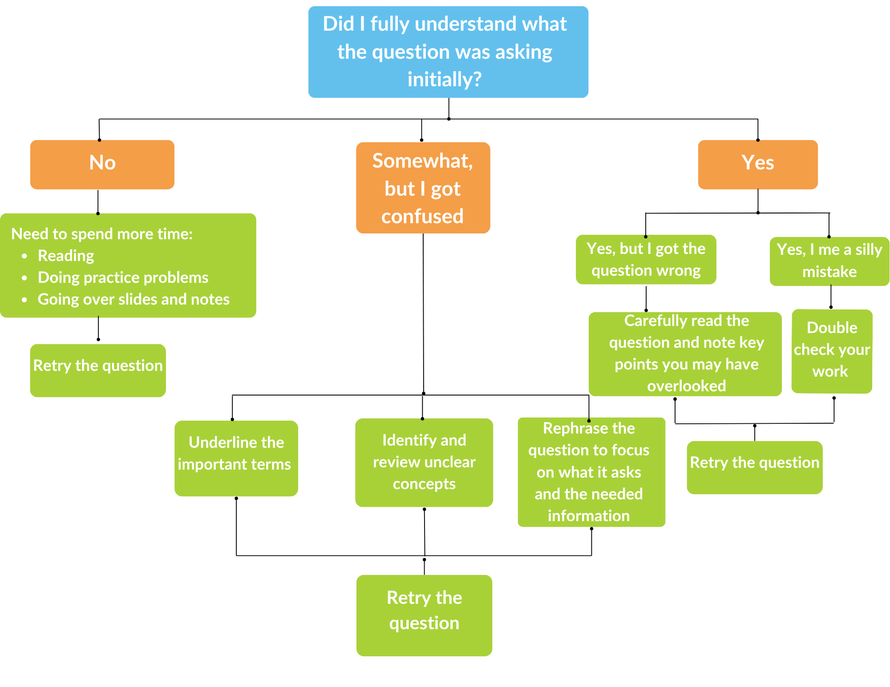
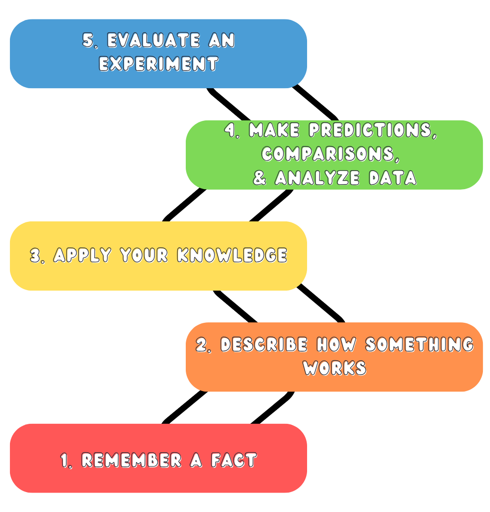
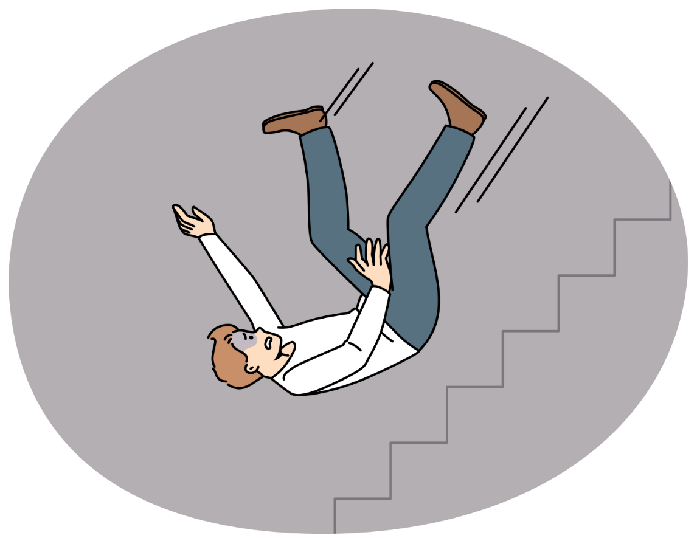

Different strategies can help you reach different levels of understanding. Finding the right study strategy on your own can be challenging. You can return to the Strategize section to review effective strategies.
Review your answers to identify what you got right and where you made mistakes

You can use this diagram to :


Failure to achieve your goal does not mean that YOU are a failure! Failure is a normal part of learning, and can provide an opportunity to figure out what you will do differently next time.
Establish a growth mindset. You are capable of doing better! Don't listen to internal voices that undermine your confidence. Instead, you can say to yourself some of the following19:
Remember your aspirations and let your goals inspire you to keep going, even when things don't go as planned!
After evaluating how you performed, think about whether you might want to adopt any new study strategies. Describe one new approach you could try, and why it might work well.